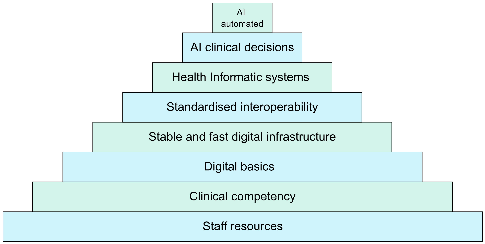

Sometimes an anti-virus update goes wrong.

I am not one to jump on headliners in the news, but the recent CrowdStrike update that has caused global breakages of Window systems is alarming. It has affected systems in the NHS too, with my local hospital having 4 major systems affected by the update (confirmed by frontline staff). There are many sites talking through how to fix the issue caused by the update, and one can be found here. CrowdStrike is a cybersecurity technology company based in Austin, Texas. It is concerning that a company that is supposed to keep the our Windows computers safe, has caused planes, banks and even your favourite supermarket to suffer.
The above global news story has given me the push to write about a topic that I have been wanting to talk about for some time. It is time to talk about pyramids.
 Digital Health Infrastructure Pyramid
The above pyramid is a concept I recently discussed at the Swedish SFMI conference in October 2023. It was a very well received concept. I have been meaning to discuss it here in the UK, and so here we go.
You may notice a lot of talk at the top level of government (well at least the recent previous one) is (was) about how AI can fix pretty much all of your clinical problems. Unfortunately, there is a lot of Snake Oil around all of this. This is not to say AI cannot help you with your clinical or admin problem, but you need to choose wisely. And even if the AI solution that you are trying to install could deliver better digital care, there is a huge overlooked problem that seems to be rarely talked about at the centre downwards. This elephant in the room is that we are not getting the basics right. We are asking AI to help run our practices, but they cannot connect to the right resources. We are asking AI to analyse data and diagnose some serious disease or help manage a patient’s condition, but the data in our digital systems are poorly entered and poorly managed. We need to enable, correctly and safety, and implement the basics before we consider anything as advanced as AI enabled healthcare.
So what is the Digital Health Infrastructure Pyramid? It is a principle that you need to get the basics right first, and only progress to the next level of digital transformation when you have secured the current level of infrastructure. You need to build strong foundations before you can build on top of your base. If you have not secured your foundations, it is very likely the top of your pyramid will topple over, the inverted pyramid philosophy.
So what does each level of the pyramid mean, and what do you need to sign off before you can start building on the next level up? Let’s take it in order.
- Staff resources: At this very basic, but essential, stage, you need a workforce that can work well and safely. For this you need the right resources for ALL staff including food, water, rest areas, equipment and working environments.
- Clinical competency: For a healthcare system to enable great and safe care for their patients, you need well trained clinical and non-clinical staff AND of appropriate numbers.
- Digital basics: Once you have got your staff working at the best of their abilities in a safe and well trained system, you can then move onto digital. In this stage, you need to focus on the basic IT infrastructure. This includes a well trained and in appropriate numbers IT workforce, networks, intranet connectivity, computers and printers.
- Stable and fast infrastructure: This is where you up your game. At this stage you look to fully optimise the basic digital systems that you have running in your infrastructure. This includes fast running and stable computers and fast running and stable internet.
- Standardised interoperability: This may seem a bit odd to put next as an essential foundation before moving up the pyramid, especially before having any EPR (electronic patient record) or related healthcare specific digital system. However, I feel it is very important to think about this, agree on this, and then build around the interoperability standard when you build our healthcare specific digital systems. Ideally this should be a national interoperability standard.
- Health Informatic systems: Now you have a secure, stable and working system. You have staff that are providing the best care that they can deliver, and IT systems that are ready for you to build your digital health systems onto. It is now that you can start installing your EPR, your image system (PACS) your bloods and microbiology system (LIMS). This can be a very difficult stage. Which EPR should you buy, should you make it in house, how do you train and prepare your staff for this new way of working, how to you enable rather than hinder by using digital?
- AI clinical decision: At this stage, you should have good quality data, health information systems that work well and are helping your staff provide great care for their patients. You can now consider using AI to help the clinical team (and likely the non-clinical team too) to help provide support for patient management through the use of clinical decision support systems (CDSS). And you need to hone in great end-user centred design so that these systems actually enable rather than hinder. There is a huge issues with CDSSs and how they alert too much or inappropriately. This is appropriately named alert fatigue.
- AI automated: The Topol review states that healthcare can greatly advance by using AI (and genomics). There is great possibilities to improve workloads, workflows and patient safety with the use of AI. However, we need to do this with our eyes wide open. AI is not perfect. AI can cause harm. AI can hinder and prolong processes, just like any other “transformation” project. But at the end of the day, for AI to even potentially deliver benefits to healthcare, we need the strong and secure footings of all of the stages below it.
Now, this pyramid is not set in stone (excuse the pun). This Digital Health Infrastructure Pyramid is my view on how we should have solid foundation before we more onto the next stage of digital. I would love to hear other’s thoughts on this pyramid, how it is right, how it is wrong, and how it can be improved. Leave a comment or email me at mark@letsdodigital.org